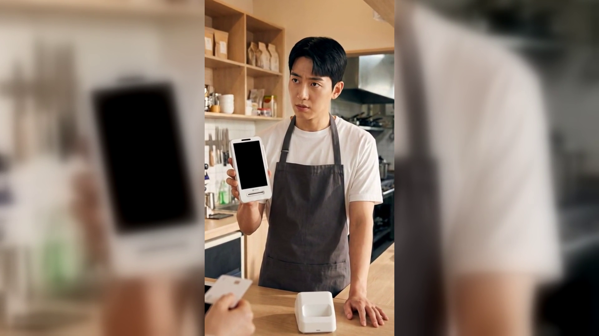
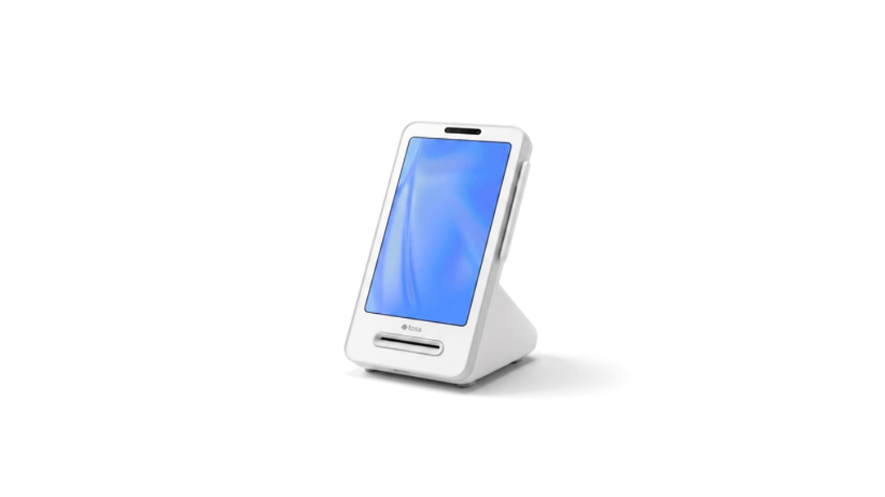

[제목]
블루투스 카드단말기, 매장에서 연결이 끊길 때 확인할 다섯 곳 — 토스단말기 설치
[본문]
점심 손님이 카드를 내미는데 단말기가 아무 반응을 하지 않습니다. 아까까지 멀쩡하던 기계입니다. 그래서 검색해 보셨을 겁니다. 오늘은 무선 단말기 연결이 끊길 때 사장님이 직접 볼 순서를 정리했습니다.
결론부터 말씀드리면, 블루투스 카드단말기가 끊기는 원인은 대부분 기계가 아니라 거리와 전원입니다.
- 단말기를 거치대 자리로 되돌려 봅니다
블루투스는 대체로 몇 미터 안에서만 안정적입니다. 주방 안쪽이나 홀 끝까지 들고 다니면 신호가 얇아집니다. 거치대가 있던 자리로 되돌려 한 번만 결제해 보면 거리 문제인지 아닌지 그 자리에서 갈립니다.
- 배터리 잔량부터 확인합니다
잔량이 바닥에 가까워지면 화면은 켜지는데 통신만 먼저 힘을 잃습니다. 켜지니까 고장이 아니라고 넘기기 쉬운 상태입니다. 잠깐 충전한 뒤 다시 해 보시면 원인이 정리됩니다.
- 사이에 무엇이 놓였는지 봅니다
스테인리스 조리대, 냉장고 문, 벽 안쪽 배관은 신호를 크게 깎습니다. 기계를 옮기는 것보다 사이에 놓인 금속을 치우는 편이 빠를 때가 많습니다.
- 같은 대역을 쓰는 기기를 잠깐 꺼 봅니다
전자레인지, 매장 공유기, 무선 주문벨이 같은 대역을 씁니다. 하나씩 꺼 가며 결제해 보면 어느 기기가 겹치는지 금방 나옵니다.
- 페어링을 지우고 다시 맺습니다
여기까지 다 해도 안 되면 기존 연결 정보를 지우고 처음부터 다시 연결합니다. 순서는 기기마다 다르니 설치할 때 받은 안내문을 먼저 펴 보십시오.
- 끊긴 시각을 사흘만 적어 둡니다
매번 같은 시간대에 끊긴다면 기계가 아니라 매장 환경 문제입니다. 점심 피크에만 끊긴다면 그 시간에 늘어나는 사람과 금속을 의심하는 편이 맞습니다.

위 1번과 5번을 매번 반복하고 계시다면 단말기 자리 자체를 다시 잡는 편이 낫습니다. 토스단말기처럼 본체와 거치대가 가까이 붙는 형태는 카운터가 좁은 매장에서 거리 문제를 줄여 줍니다. 정품 신제품 보증 · 수도권 직영 설치를 원칙으로, 매장을 보고 자리를 함께 잡아 드립니다.
연결이 끊길 때 제일 먼저 볼 것은 기계가 아니라 거리입니다. 오늘 한 번, 거치대 자리로 되돌려 결제해 보세요.
- 📞 전화상담 1544-7754
- 🌐 홈페이지 https://nwpos.co.kr

📷 인스타그램 팔로우 https://www.instagram.com/nurinetworkspos

▶️ 유튜브 구독 https://www.youtube.com/@nurinetworks
(2026년 8월 기준)
15초 3채널 공용 = 분식집 무선 단말기 연결 끊김
① 상황 — 점심 카운터, 손님 앞에서 반응 없는 무선 단말기를 들여다보는 한 박자
② 행동 — 단말기를 거치대 자리로 되돌리자 승인 표시등이 한 번 깜빡
③ 제품 — 카운터 위 흰색 무선 카드단말기 클로즈업 (첫 2초 = 3채널 썸네일)
[대표이미지]
- 이미지1-매장: 점심 분식집 카운터, 손님을 앞에 두고 무선 단말기를 들여다보는 사장님
- 이미지2-제품: 카운터 위에 놓인 흰색 무선 카드단말기 제품 컷 (화면 완전 공백)